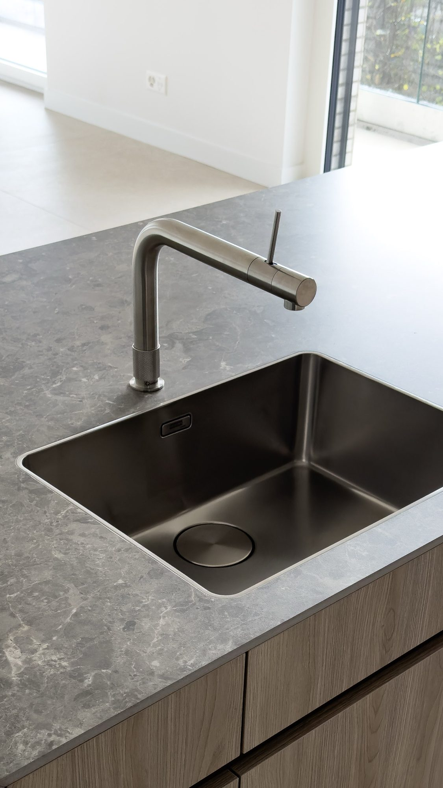

Wir installieren Wasser- und Abwasserleitungen in Neubauten und bei Umbauten und montieren die Apparate. In bestehenden Liegenschaften ersetzen wir alte Leitungen. Ausserdem übernehmen wir Reparaturen und kümmern uns um Boiler.
Neue Leitungen prüfen wir auf Dichtheit, bevor sie in Wand oder Boden verschwinden.
Die Sanitärplanung machen wir auf Wunsch selber. Arbeitet bereits ein Planungsbüro an Ihrem Projekt, installieren wir nach dessen Plänen.

Installationen im Neubau und beim Umbau.
Im Neubau beginnt unsere Arbeit oft schon in der Baugrube, mit den Grundleitungen unter der Bodenplatte. Später folgen die Leitungen in Wänden und Decken und zum Schluss Apparate und Armaturen. Aussparungen stimmen wir früh mit der Bauleitung ab.
Beim Umbau von Bad oder Küche passen wir die Leitungen an die neue Einteilung an. Soll die Waschmaschine an einen anderen Platz oder kommt ein zweites Lavabo dazu, legen wir die Anschlüsse vor Ort mit Ihnen fest.
Mehr zum BadumbauFür Verwaltungen und Stockwerkeigentümer
Verzinkte Stahlleitungen rosten mit den Jahren von innen. Bräunliches Wasser und nachlassender Druck an den Armaturen sind typische Hinweise, später kommen oft Lecks dazu.
In einem bewohnten Haus ersetzen wir die Leitungen in Etappen, meist Strang für Strang. Wann das Wasser abgestellt wird, legen wir mit der Verwaltung fest. Die Bewohner informieren wir vorher.
Sie erhalten eine Offerte, die Sie der Eigentümerversammlung vorlegen können. Reparaturen und den laufenden Unterhalt im Haus übernehmen wir ebenfalls.

Reparaturen und Boiler
Tropft ein Wasserhahn oder ist ein Siphon undicht, reparieren oder ersetzen wir das defekte Teil. Ist eine Reparatur nicht mehr sinnvoll, erfahren Sie das, bevor wir mit der Arbeit beginnen. Ein Foto an info@aderapartner.ch hilft uns, gleich das richtige Material mitzubringen.
Im Boiler setzt sich je nach Wasserhärte Kalk ab. Wir entkalken Boiler und ersetzen Verschleissteile. Muss ein alter Elektroboiler ersetzt werden, prüfen wir mit Ihnen, ob ein Wärmepumpenboiler in Frage kommt.
Mehr zu Service und WartungWasserschaden, Boiler und WC
Was soll ich bei einem Wasserschaden tun?
Drehen Sie zuerst das Wasser ab, am Absperrventil der Wohnung oder am Hauptwasserhahn beim Wasserzähler. Meiden Sie Steckdosen und Geräte, die nass geworden sind. Rufen Sie danach unseren 24h-Service unter 056 402 10 00 an.
Der Boiler liefert zu wenig warmes Wasser. Woran liegt das?
Oft ist Kalk die Ursache. Es kann aber auch das Heizelement oder der Thermostat defekt sein. Ob eine Reparatur reicht oder ein neuer Boiler nötig ist, zeigt die Kontrolle.
Das WC läuft ständig nach. Was ist kaputt?
Meist schliesst das Ventil im Spülkasten nicht mehr richtig, oft wegen Kalk oder einer abgenutzten Dichtung. Bei einem Unterputz-Spülkasten erreichen wir das Innenleben in der Regel durch die Öffnung hinter der Betätigungsplatte, ohne die Wand zu öffnen.